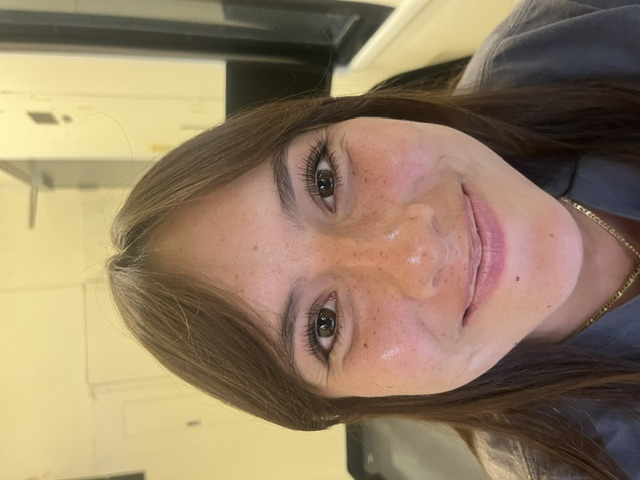
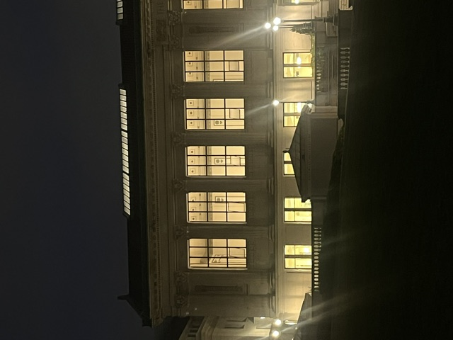
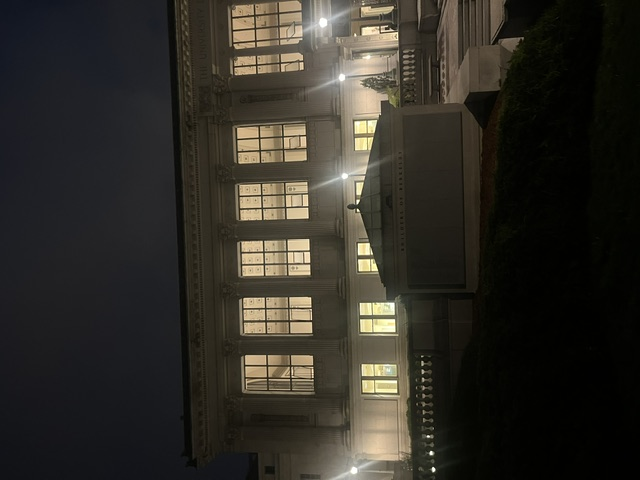
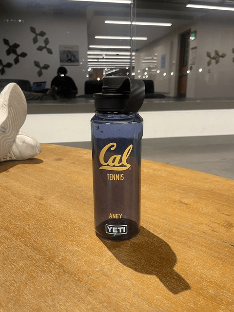

The reason for the difference between the two images is that in the photo on the right, the features closest to the camera are significantly enlarged. The relative distance of how close the features are to each other compared to the camera is much greater than when the photo is taken from far away and then zoomed in.


The difference between these photos is very similar to what is happening in the first two photos. In the photo on the right, because it is taken closer to the building, the distance between pillars and the building is amplified. On the other hand, in the one on the left the distance of the camera from the building is much larger than the distance of the building to the pillars, so the building as a whole looks much flatter.
